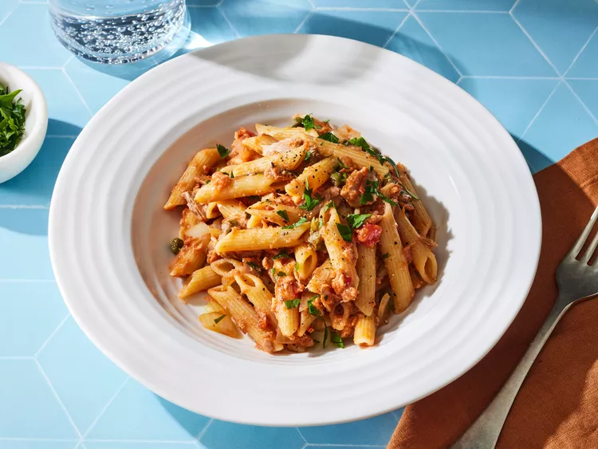

*
Home
Pasta

Description
Pasta is a classic Italian dish made from wheat dough and served with a variety of sauces and seasonings.
Ingredients
- Pasta
- Tomato sauce
- Garlic
- Olive oil
- Parmesan cheese
Steps
- Boil water and cook the pasta.
- Prepare the sauce in a separate pan.
- Drain the cooked pasta.
- Mix pasta with the sauce.
- Top with cheese and serve.